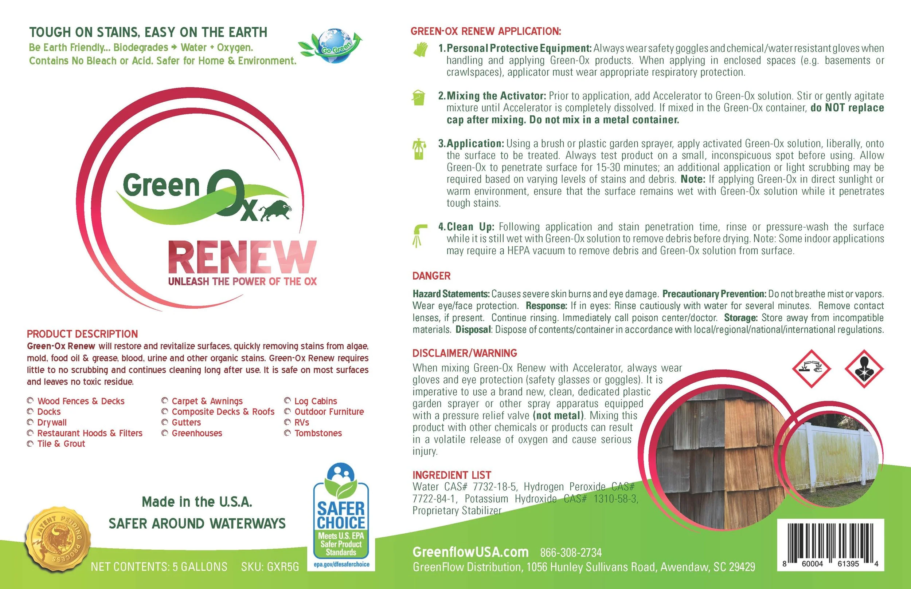
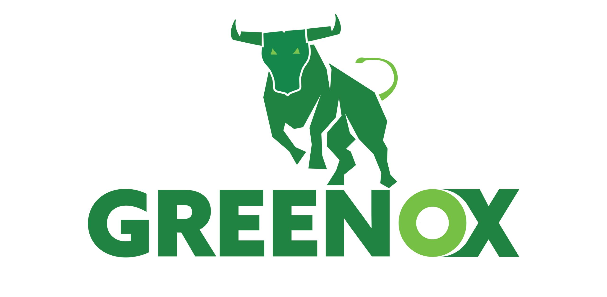
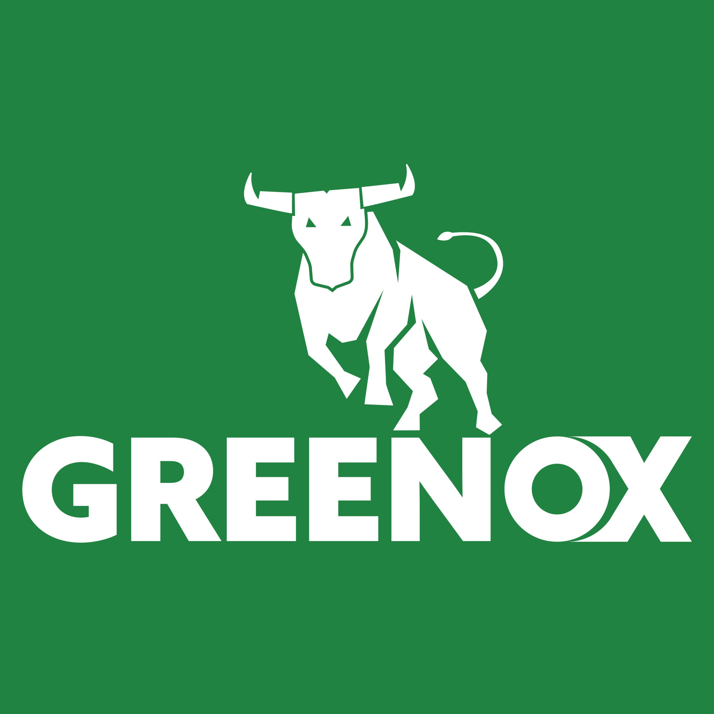
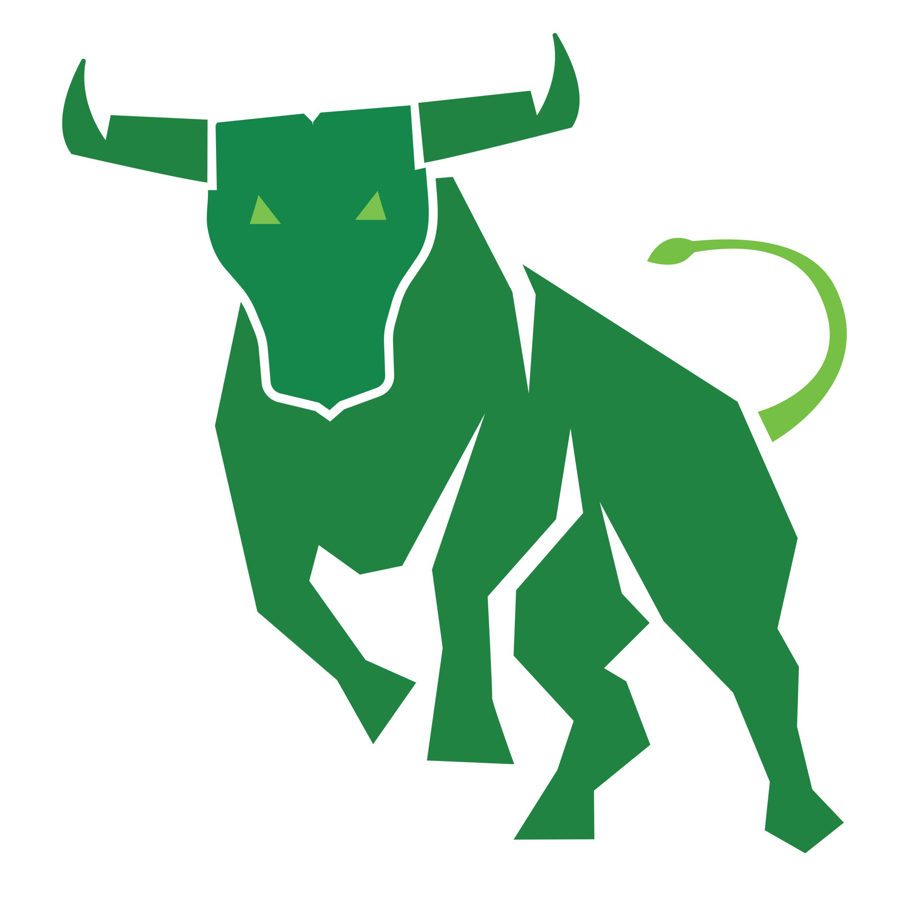
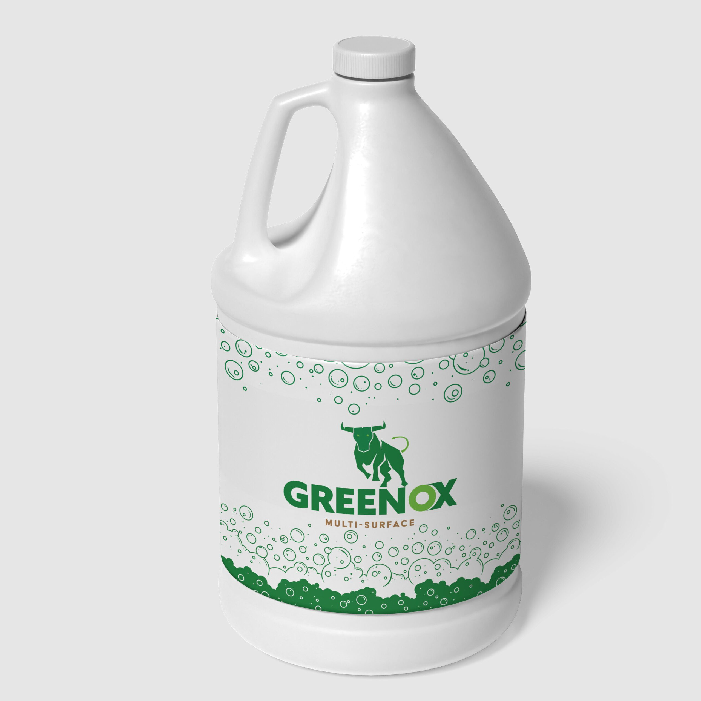
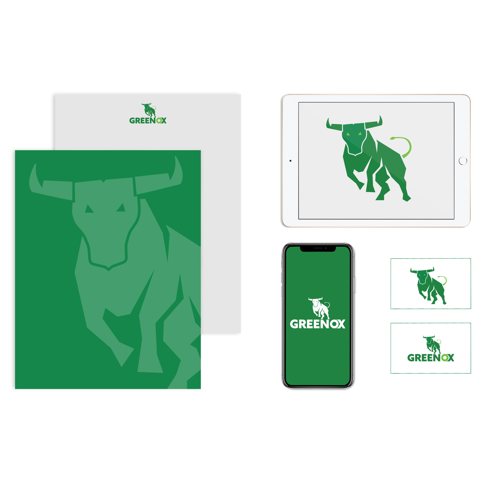

Green
Ox
A full rebrand of an eco-friendly wood cleaner — from dated and generic to premium, modern, and shelf-ready.

A full rebrand of an eco-friendly wood cleaner — from dated and generic to premium, modern, and shelf-ready.
Client: GreenFlow USA
Project: Brand Refresh & Logo Redesign for Eco-Friendly Wood Cleaner
GreenOx Renew is a high-performance, earth-friendly wood cleaner that restores and revitalizes weathered decks, fences, docks, crates, and other surfaces. Its unique hydrogen-peroxide-based formula removes mold, mildew, algae, and organic stains quickly — without aggressive scrubbing or pressure washing — while remaining safe for kids, pets, plants, and waterways.
The client needed a full rebranding of their existing product range to better reflect the product's modern, premium, and sustainable positioning in a competitive outdoor-cleaning market.
The original branding felt dated and generic. It didn't fully communicate the effortless performance, eco-conscious innovation, or "renewal" story that sets GreenOx Renew apart. The packaging needed a cohesive, contemporary look across three different product lines while staying true to the brand's core values: non-toxic, biodegradable, U.S. EPA Safer Choice qualified, and Made in the USA.


The Bull — Chosen as the hero of this mark because it immediately communicates strength, power, and forward momentum. Rendered in a geometric, faceted approach — almost like a low-poly 3D form — so it feels modern and sharp without losing any of the toughness. Bright glowing green eyes give it personality and intensity. The curled lime green tail keeps it from feeling too heavy or rigid — it adds energy and movement.
The Typography — A heavy, wide sans-serif wordmark because it needs to hold its own visually against a powerful animal mark. The 'O' gets a special gradient sphere treatment — it breaks up the letterforms in a subtle way, adds dimension, and draws the eye right to the 'OX' part of the name.
The Color — Palette kept intentionally tight — deep forest green paired with a lime green gradient. Staying within one color family keeps it clean and professional, but the shift between dark and light greens gives depth and visual interest without introducing a whole second color. Green carries great brand associations: growth, energy, nature, sustainability.
The Composition — Structured so the bull sits directly on top of the wordmark, with the legs slightly overlapping the letters. That overlap integrates the icon and the text so they feel like one unified mark — not two things stacked on top of each other. Your eye naturally goes to the bull first, then drops down to the name.
The Bottom Line — This logo works at every scale — just as strong on a business card as it is on a billboard or an embroidered hat. Bold, ownable, and looks like a brand that means business.




The new identity transforms GreenOx Renew from a functional cleaner into a standout eco-premium brand. The bold, clean design immediately communicates performance and environmental responsibility, making the product more shelf-appealing to contractors, homeowners, and retailers alike.
The refreshed branding is now live on major distributors — Amazon, specialty power-washing suppliers, and GreenFlow's own channels — and continues to reinforce GreenFlow USA's leadership in safer, more effective outdoor cleaning solutions.
"Kevin nailed the balance we were looking for — strong, modern, and unmistakably 'green' without being cliché. The new look has already received great feedback from our distributors and end users."